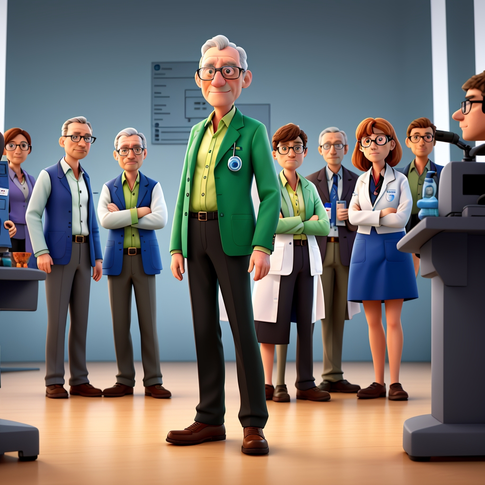

Have you heard about Dr. Streyer?
Dr. Tomas Streyer stood in a room filled with his team of scientists and engineers. Excitement and fear mingled within him as they were about to embark on a remarkable journey – uncovering the origins of the universe. Despite his inner turmoil, he tried to maintain an air of calmness. Outside the window, the sky painted a serene summer blue, offering a momentary respite..